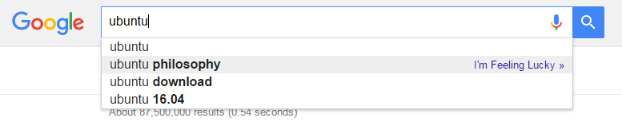
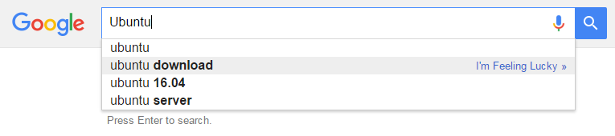

Duck Duck Go have a very compelling argument for why we should use them over say Google or another search engine. Apart from the privacy aspect where they claim they are not tracking us1. They talk about the "search bubble" it's easy to see, just open up a new tab and Google search terms like "philosophy", then "karma", then "Sharing" now type in "Ubuntu" and the first auto complete for me is "Ubuntu Philosophy"

Now try again throw in words like "Linux", "open source" and "Debian" now type in "Ubuntu" and for me the first auto complete is "Ubuntu Download"

It's easy to see how this can be useful, the more Google knows about your preferences the more it can tailor your search results to be what you want. If I search "great places to eat" and I'm in Perth, Australia I don't want a recommendation for a burger joint in Birmingham, Alabama that's a little over 17,892km away from me. If Google knows you're a strict Vegan, it's not going to recommend the local Steakhouse.
But it's also got the potential to skew your view of the world. Imagine two tourists come to Perth, a vegan and a meet eater, they both search "great places to eat in Perth" and one gets a bunch of restaurants like The Raw Kitchen while the other finds places like ribs and burgers because that's what Google's advertising thinks they can sell. Now they go home and discuss how they found Perth, one says "There are a lot of hippies in Perth, it's a really relaxed place" while the other thinks "Perth people love their meet, they must all be carnivores"
Now think about the Google searches with questions about religion, gender identities, racial prejudiced. Duck Duck Go's sales pitch is that their search results are the same, no matter who you are, where your from or what they think you might like. Sometimes their search results are not as good as Google's but that's not always a bad thing.
-
To a large extent we simply have to take their word for it that they are not recording what people search for, but based on the available evidence I'm inclined to believe them. ↩